Regression with a known concept structure¶
The script of this tutorial is examples/regression_synthetic.py; every figure below is produced by it.
The problem has three latent factors, each measured by three features that correlate at 0.8 within the block, and a nonlinear response. The true concepts are the three blocks, so the recovered partition, the stability of the ranking and the calibration of the intervals can all be checked.
Data and explainer¶
problem = make_synthetic("additive", n_samples=800, n_features=9, rho=0.8, n_factors=3, random_state=0)
X_train, X_test, y_train, y_test = train_test_split(problem.X, problem.y, test_size=0.25, random_state=0)
feature_names = [f"x{j}" for j in range(9)]
explainer = sparc.Explainer(n_resamples=20, n_concepts_grid=(2, 3, 4, 5), random_state=0, n_jobs=4)
explainer.fit(X_train, y_train, feature_names=feature_names)
explanation = explainer(X_test[:60])
print(explanation)
print(explanation.describe(0))
The explainer prints its summary and the sentence form of the first instance. The knee explanation here has three concepts, one per block, and retains two of them.
The explanation at a glance¶
save(plots.bar(explanation), "bar")
save(plots.beeswarm(explanation), "beeswarm")
save(plots.waterfall(explanation[0]), "waterfall")
save(plots.interval_bars(explanation[0]), "interval_bars")
save(plots.fuzzy_attribution(explanation, 0), "fuzzy_attribution")
save(plots.linguistic_profile(explanation[0]), "linguistic_profile")
save(plots.disagreement(explanation[0]), "disagreement")
save(plots.membership(explanation.partition), "membership")
save(plots.concept_graph(explanation), "concept_graph")
save(plots.front(explanation), "front")
save(plots.front_navigator(explanation, instance=0, n_members=3), "front_navigator")
save(plots.selection_membership(explanation), "selection_membership")
save(plots.heatmap(explanation), "heatmap")
save(plots.dependence(explanation, 0), "dependence")
save(plots.force(explanation[0]), "force")
save(plots.decision(explanation), "decision")
Which concepts matter, over all instances and for one¶
The global bar shows the mean absolute attribution of every concept with the support of its fuzzy global importance; the asterisk marks the concepts the knee retains. The beeswarm shows the same per instance, coloured by the concept score of the instance.
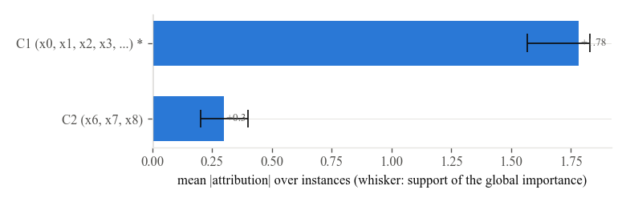
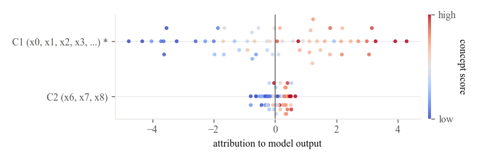
One instance, with its uncertainty¶
The waterfall walks from the base value to the model output concept by concept. The interval bars add what a point estimate hides: the core and the support of every attribution, its sign confidence and the disagreement between model classes. The fuzzy attribution plot draws the membership functions themselves; where the model classes disagree beyond the threshold the attribution is of type 2 and the band between the model classes is shown.
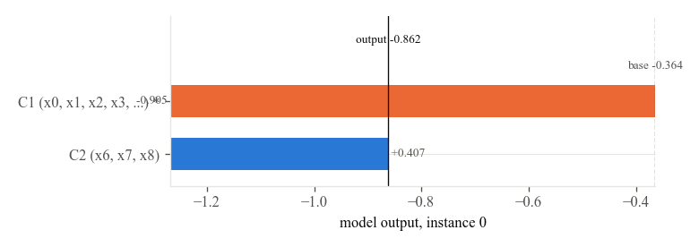
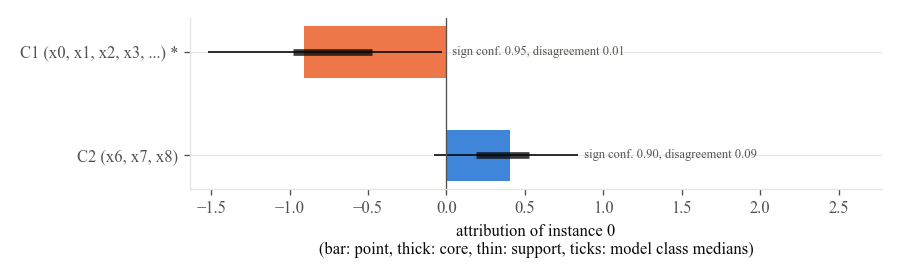
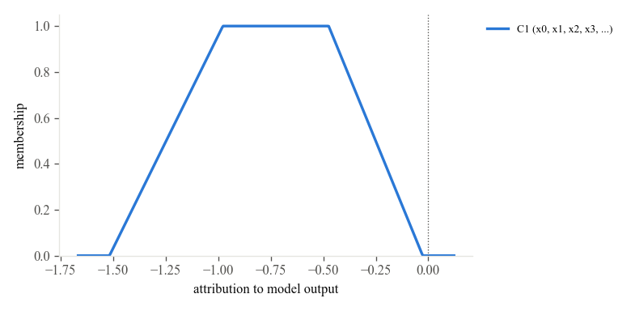
Words, and where they come from¶
The linguistic profile is the compatibility of every label with every concept's fuzzy number; the best label is what describe reports. The disagreement plot shows the resamples of every model class separately, which is where the disagreement index comes from.
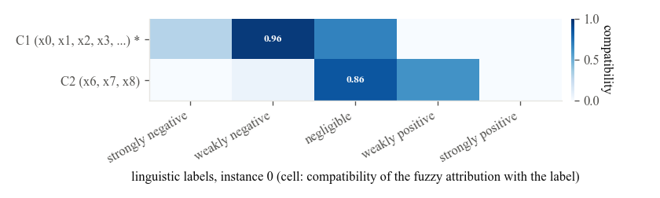
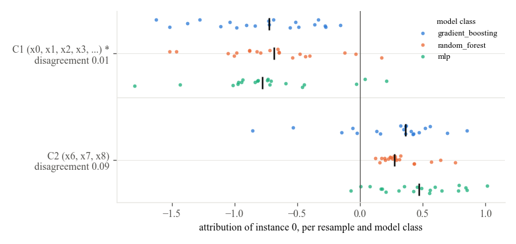
The concepts¶
The membership heat map and the concept graph show the fuzzy partition: three blocks, recovered from the correlation profiles alone.
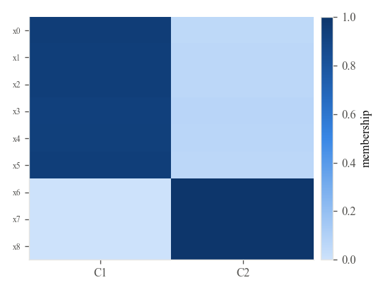
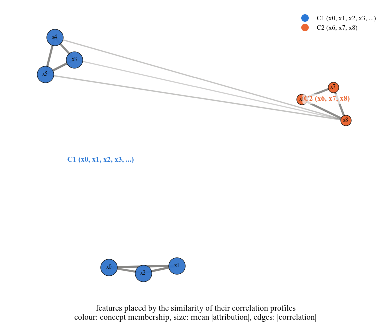
The front¶
The knee is a default, not a limit. The front plot shows every evaluated configuration, the Pareto front, the knee and the fidelity optimal member; the navigator shows the same instance explained at three members of the front, from the sparsest to the most faithful. The selection membership tells how often the front retains every concept and every feature, a robustness that no single explanation can show.
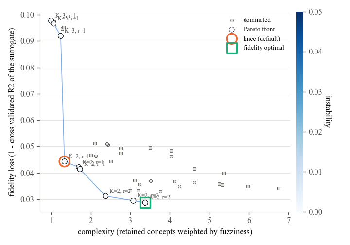
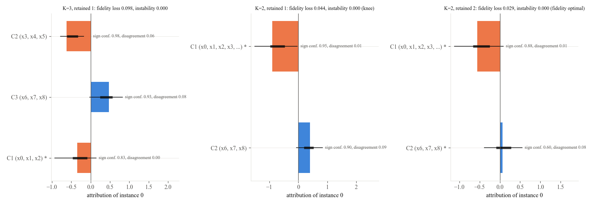
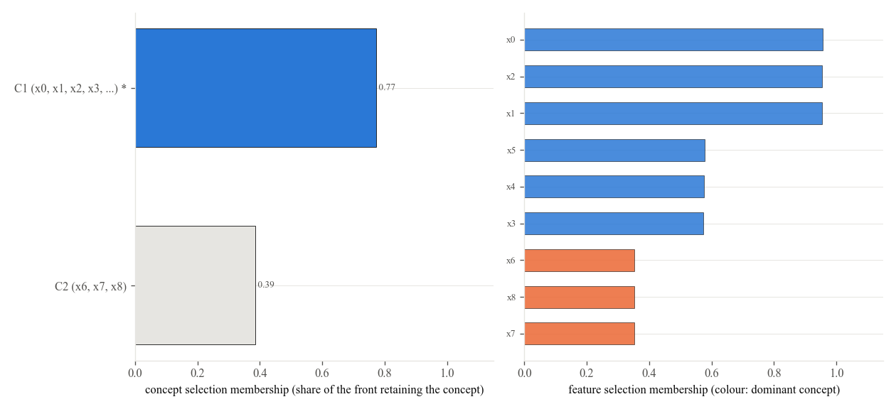
The familiar views¶
Heat map of instances by concepts, dependence of a concept's attribution on its score, force plot and decision plot of the whole sample.
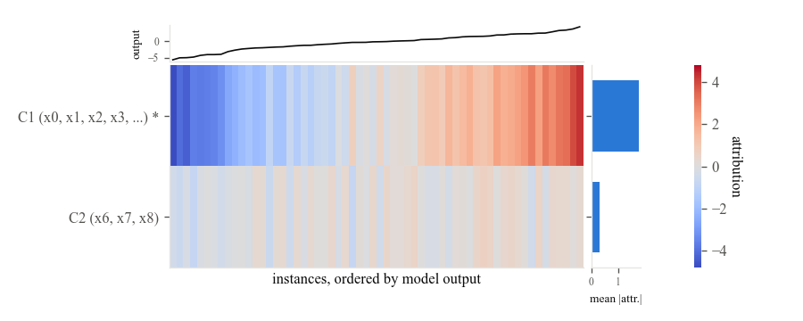
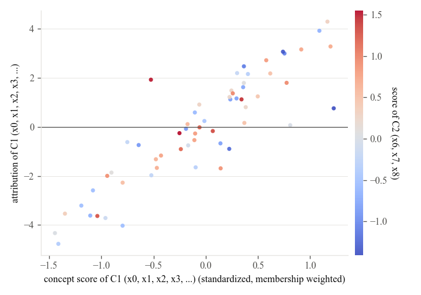
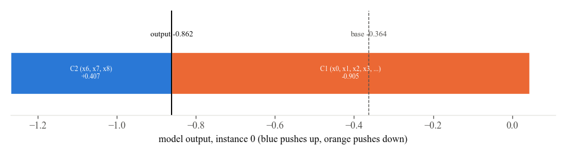
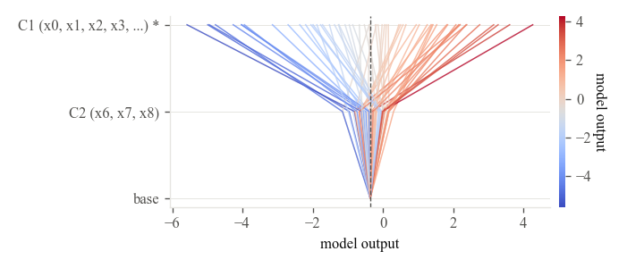
Are the intervals honest?¶
A replicate attribution, the same instances explained by an explainer fitted on another split of the data, should fall inside the support about 90 percent of the time and inside the core about 50 percent of the time.
# a replicate: the same instances explained by an explainer fitted on another split, scored against the intervals
X_train2, _, y_train2, _ = train_test_split(problem.X, problem.y, test_size=0.25, random_state=1)
replica = sparc.Explainer(n_resamples=20, n_concepts_grid=(2, 3, 4, 5), random_state=1, n_jobs=4).fit(X_train2, y_train2, feature_names=feature_names)
replicate = replica(X_test[:60]).feature_attribution()
save(plots.coverage(explanation, replicate), "coverage")
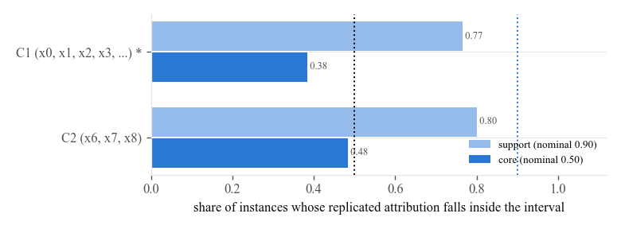
Tables and checks¶
print(explanation.instance_frame(0).round(3).to_string(index=False))
print(explanation.global_frame().round(3).to_string(index=False))
print(explanation.front[["n_concepts", "fuzzifier", "sparsity", "alpha", "fidelity_loss", "complexity", "instability", "knee"]].round(3).to_string())
# the true concept structure is known here: compare the recovered partition with it
from sklearn.metrics import adjusted_rand_score # noqa: E402
print("adjusted Rand index of the hardened partition with the true blocks:", round(adjusted_rand_score(problem.true_membership.argmax(axis=1), explanation.partition.labels), 3))
print("sum of concept values + base value = model output:", np.allclose(explanation.values.sum(axis=1) + explanation.base_values, explanation.output, atol=1e-6))
The last two lines verify two things that hold by construction: the concept values plus the base value reproduce the model output of every instance, and the hardened partition is compared with the true blocks by the adjusted Rand index.